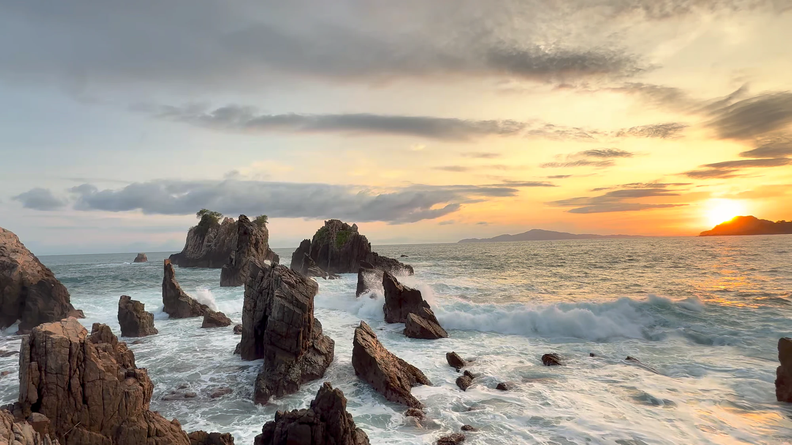

Original vs Keep 4K
Back
to Cloud Media Shrinker

Original
Keep 4K
71% smaller
Close
Turn your phone sideways for a bigger view.
A real video I took on my iPhone in Indonesia, and the same moment from its Keep 4K copy. Drag the handle to compare.